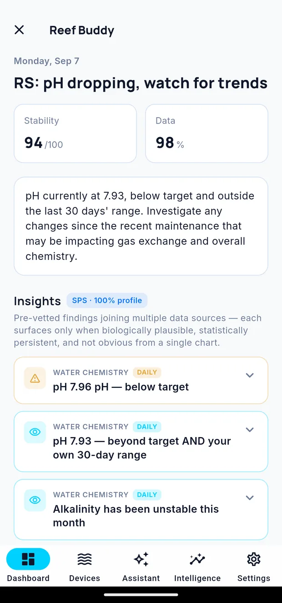

Reef Buddy
Reef Buddy is a short daily read on your tank. It arrives each morning, tells you what changed, and flags anything worth your attention before you notice it yourself.
It appears as a card at the top of your dashboard, and as one notification.

What is in a briefing
A headline — a one-line summary of the tank today.
Two scores:
| Score | Means |
|---|---|
| Stability | Out of 100. How steady the tank has been against your targets |
| Data | A percentage. How complete the data behind the assessment is |
A low Data score means the assessment rests on fewer readings than it would like, and is worth more than the Stability number next to it.
A summary — a short paragraph explaining the headline, referencing your actual values and ranges.
Insights — the individual findings. Each carries a category (such as Water Chemistry), a cadence (such as Daily), and expands for detail. A chip at the top of the section shows the tank type and how complete its profile is, because both affect what Cora can conclude.
Insights are filtered before they reach you: each appears only when it is biologically plausible, statistically persistent, and not already obvious from a single chart.
Tap the card on the dashboard to open the full briefing.
When it arrives
Once a day, in the early morning, per tank.
On a day when nothing needs your attention, Reef Buddy usually stays quiet rather than pushing to say everything is fine. If it pushed, something changed.
Reading the scores
Stability reflects where your parameters sit against your own targets and how steady they have been. It is a trend to watch over time rather than a grade — compare it against your own previous scores, not against another tank.
Data reflects how much recent information the assessment had. It falls when readings go stale.
Dismissing the card
The × clears today's card from the dashboard. Tomorrow's still arrives. Past briefings stay available from the Intelligence tab.
Turning it off
Settings → Notifications controls whether the briefing pushes. The card still appears on the dashboard even with the push turned off, so you can have it without being interrupted.
Telling it when it's wrong
Each insight can be marked useful or not. That feedback shapes what you get told about — an insight you keep dismissing stops leading your briefings.
Written for Cora Max 0.28.28 and Cora Mobile 0.5.52.
Still stuck? Email cora@coraiq.tech and we'll help.